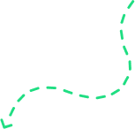
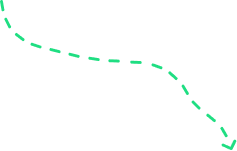
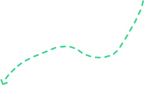
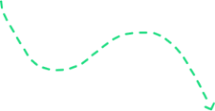
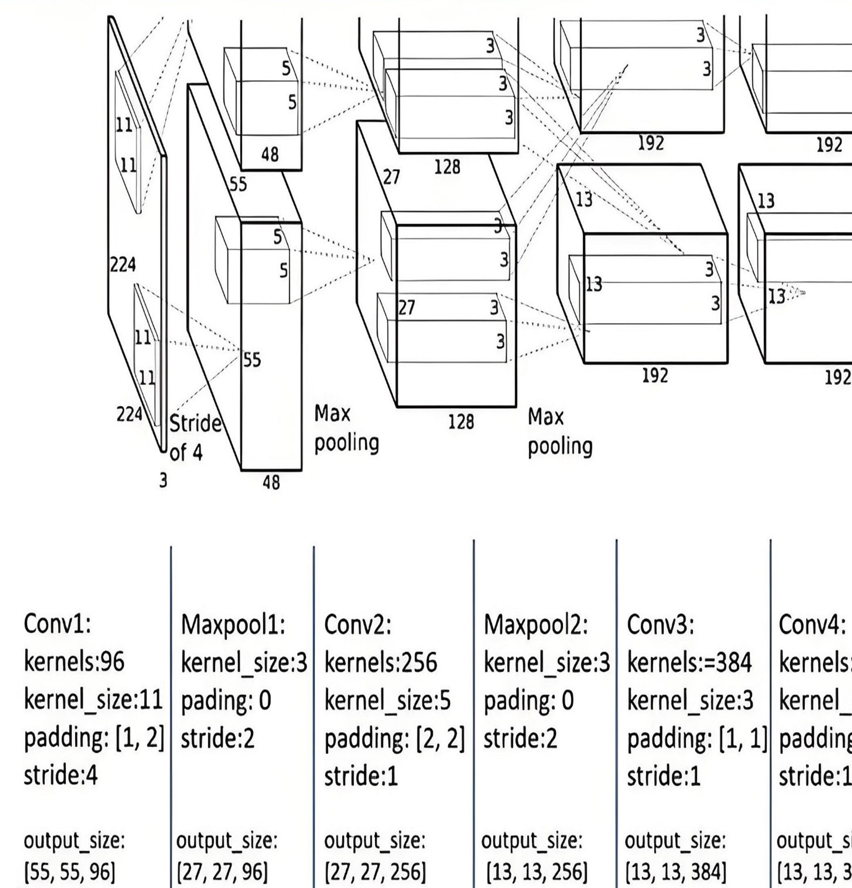
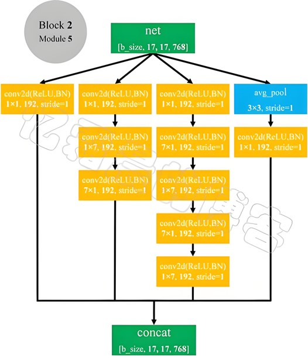
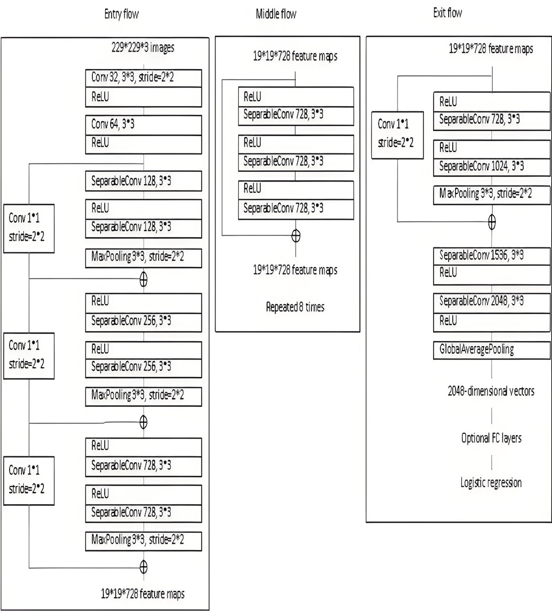
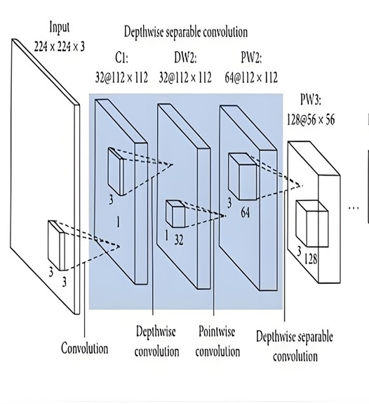
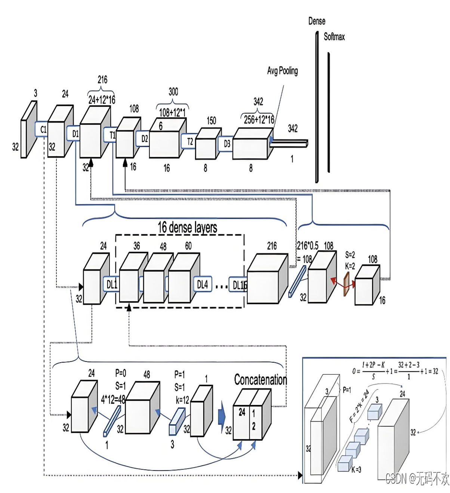

图像情感分析平台
什么是图像情感分析？
你可以尝试！

我们的目标
该数据集的图像数量约为30,000张，属于中等大小的图像数据集。
包含7种情感类别：愤怒、厌恶、恐惧、高兴、悲伤、惊讶和中立。
侧重于真实世界中的面部表情，具有较强的实用性和泛化能力。
部分图像包含不完整或模糊的面部表情，可能会影响模型的准确性。
为什么选用RAF-DB数据集?
我们的工作过程
数据收集
我们首先从公开的RAF-DB数据集中收集了包含面部表情的图像数据（已经分类），确保数据的多样性和标注的准确性。这些图像数据为后续的情感分析提供了丰富的训练样本。

数据预处理
我们通过检查并去除损坏的图像文件、图像尺寸标准化、数据集统计与平衡性检查、数据增强等步骤进行数据预处理。

模型选择并训练
我们选择三种深度学习模型进行情感分析任务。这些模型的选择基于它们在计算机视觉领域的成功应用，且具有不同的网络架构。我们利用训练集对这些模型在GPU上进行了训练，通过验证集进行调参和优化。


结果评估与对比
在模型训练完成后，我们使用独立测试集对各个模型的性能进行了评估，主要通过准确率、精确率、召回率、F1分数、混淆矩阵这几种指标进行对比。

展示平台制作
为了更好地展示实验结果并提供用户交互，我们利用HTML、CSS、JavaSprit、Gradio等技术制作了一个展示平台。该平台允许用户上传面部图像，并通过训练好的模型进行情感分类。
其他可能的模型

AlexNet
AlexNet是由Alex Krizhevsky等人在2012年提出的一个卷积神经网络架构，广泛应用于图像分类任务。 AlexNet的成功标志着深度学习在计算机视觉领域的突破，特别是在ImageNet竞赛中的表现。
了解更多
InceptionV3
InceptionV3是Google提出的一种深度卷积神经网络架构， 它基于Inception模块，采用了不同大小的卷积核来提取图像的不同特征，具有更高的计算效率和性能。
了解更多
MobileNetV2
MobileNetV2是Google推出的轻量级卷积神经网络，专门为移动设备和嵌入式设备设计。 它通过深度可分离卷积（Depthwise Separable Convolution）大幅度减少了模型的计算量和参数量，适合资源有限的设备。
了解更多
DenseNet
DenseNet是一种基于密集连接的卷积神经网络。与传统的卷积神经网络不同， DenseNet中的每一层都与前面所有的层直接相连，这种设计使得信息和梯度能够更高效地传递，从而增强了模型的表现力。
了解更多
Xception
Xception是一种基于深度可分离卷积的网络架构，是对Inception模型的扩展。 Xception去除了Inception中的1x1卷积，并完全依赖深度可分离卷积来提取特征。
了解更多